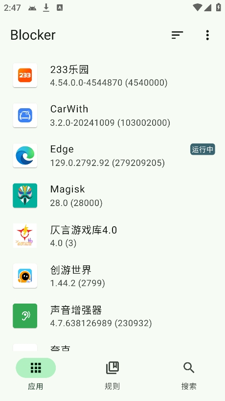
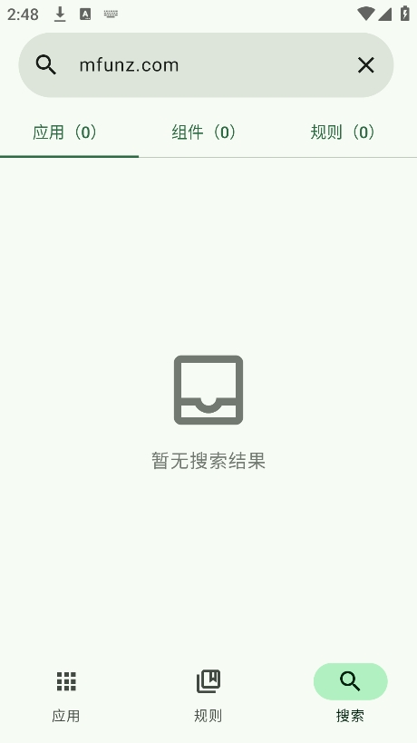

Blocker vs 同类组件管理：为什么它是现在还在维护里的独一份
安卓组件管理这个赛道死的死、停更的停更，Blocker 是少数还在活跃迭代的。我从 MyAndroidTools 一路用到现在，把它放进坐标系里聊聊——差别不在功能多寡，而在它解决了前人没解决的授权和迁移问题。
安卓组件管理这个圈子其实不大——五年前有 MyAndroidTools、Android Faker、Package Disabler Pro，到现在还在维护的，数来数去就剩下 Blocker 和少数几个小众替代品。我从 2019 年开始用 MyAndroidTools 管组件，看着它停更、看着替代品一个个冒出来又一个个死去，最后把主力换成 Blocker 不是冲动，是它在几个关键问题上做得确实比同类更靠谱——安装包从下载拿就行。

同类工具的格局：为什么这个赛道活下来的少
组件管理的核心矛盾从来不是"能不能关组件"——几乎所有工具都能关 activity、service、provider、receiver 这四大组件。真正的矛盾在两个地方：授权通道够不够稳，和规则能不能跨设备、跨控制器迁移。
MyAndroidTools 当年的问题就是授权太脆弱：走 PM 路线，某些厂商系统上莫名其妙就失效，换个 ROM 之前调的规则全废。Package Disabler Pro 靠系统签名，好是好，但非 root 设备根本用不了，而且开发者后来转向付费订阅路线，社区口碑迅速崩了。IFW（Intent Firewall）这条路理论上比 PM 强大太多，但早年没有工具把它用好——规则手写 XML，普通用户根本玩不转。
去Blocker官网看看就能理解它的定位：它不是第一个组件管理器，但它是第一个同时把 PM 和 IFW 两种控制器做好、并且让用户不需要理解底层原理就能用的工具。
差异化一：双控制器架构——不赌某一条路
绝大多数同类工具要么只走 PM（比如 MyAndroidTools 全家），要么只走 IFW（比如早期的 IFW 单独编辑器）。Blocker 从一开始就把 PM 和 IFW 做成了两个独立的控制器，用户可以二选一，也可以组合用（IFW+PM）。
这件事的实际意义，在遇到 SecurityException 的时候最能体现出来。我手上有一台小米 13T，bootloader 解不了锁，Magisk 刷不进去——Shizuku 用 shell 通道跑 MyAndroidTools，改普通应用组件的时候直接报 SecurityException: Shell cannot change component state，翻遍 Reddit 也没找到能在这台机器上生效的解法。换 Blocker 之后直接切 IFW 模式，所有组件开关瞬间恢复正常，不用 root、不用折腾 Shizuku 权限。

双控制器还带来一个好处：同一个组件可以用不同策略。比如某些厂商系统里，禁用小米推送的 service 用 PM 会被系统自动还原，但用 IFW 拦截 intent 就不会——PM 管"开关"，IFW 管"拦截"，组合起来比单一方案稳得多。这不是什么黑科技，就是老老实实把两条授权通道都做通了。
差异化二：旧工具的规则真的能继承
换组件管理工具最大的痛点不是重新调开关，而是之前花了几个月攒的规则全丢了。MyAndroidTools 停更之后，社区里最常见的帖子就是"谁能帮我把 MAT 的备份转成 XX 格式"——每个新工具都有人写转换脚本，但写得好的没几个。
Blocker 是我见过唯一一个原生支持 MyAndroidTools XML 导入、并且能一键转 IFW 规则的工具。去年我换手机，旧手机里有一份三年前攒的 MyAndroidTools 备份（大概七十多个应用、四百多条组件开关），本来已经做好了重新手动调一遍的准备——结果 Blocker 导入之后直接问我要不要转 IFW，点了一下，半分钟搞定，新手机上的规则和旧手机一模一样。
导入的细节也做得很细：包名对不上的应用自动跳过、导入前可以先导出当前规则做备份防覆盖、控制器类型自动匹配。不是那种"能跑就行"的糙实现，是真的考虑到了老用户迁移的场景。
差异化三：规则文件本身就是产品
Blocker 的 PM 规则支持两种导出格式——自家的 JSON 和 MyAndroidTools 兼容的 XML。这看起来像个功能点，实际上它解决了组件管理圈长期缺失的东西：规则文件作为独立资产的流通性。
之前你想把"微信禁广告"的规则分享给朋友，要么截图让他一条一条手动改，要么传一份模糊的备份文件过去还得猜格式。现在导出一份 JSON，直接发给他导入就行——换机迁移、批量调之前存底、多台设备统一配置，这些都变成了操作路径上两三次点击的事。
它的取舍：不是没有代价
说它好不是没有代价。最明显的一点：上手门槛比同类工具略高。双控制器听起来很美好，但新用户进来一看三个选项（PM / IFW / IFW+PM），很容易懵——论坛里"我该选哪个"这个问题的出现频率估计比其他任何问题都高。MyAndroidTools 就简单多了，默认 PM 路线，不用选。
第二个取舍：对 root 的依赖程度其实比看起来高。去Blocker文档翻一下就能看到，Shizuku 走 shell 权限的时候，改普通应用组件会被 PackageManagerService 硬限制——这不是 Blocker 的锅，是 Android 底层就这么设计的。所以 Blocker 最舒服的用法还是 root + Shizuku 或者直接 IFW，纯 shell 通道能改的应用有限。对那些刷不了 Magisk的机器来说，IFW 虽然能兜底，但 IFW 的规则粒度和调试体验跟 PM 还是有差距。
第三个取舍：更新频率在同类里算中等。Blocker 活跃是活跃，但功能迭代不快——最近大版本更新主要是 Material 3 适配和一些 bug 修，没有 MyAndroidTools 当年那种密集加新组件识别规则的节奏。好处是稳定，坏处是一些偏门应用的组件标签可能识别不准，得手动对照着 service 名字判断要不要关。
选购结论：什么样的人该选 Blocker
如果你是下面几类用户，Blocker 就是现在最好的选择：
- 手里有旧规则要迁移：MyAndroidTools 备份攒了好几年、不想从零开始调的，直接上 Blocker 的导入功能，十分钟搞定。
- 设备权限条件不好：刷不了 root、Shizuku shell 跑不通的，IFW 模式兜底是同类里做得最成熟的。
- 多设备、需要规则共享：规则文件导出导入的流畅度，目前没有替代品能比。
如果你是纯 root 用户、只需要最简单的 PM 开关，MyAndroidTools 其实还能凑合用（虽然停更了但基本功能没坏），或者找一些体积更小的单功能工具也够用。但如果你对组件管理这件事有稍微认真一点的需求——不管是规则迁移、控制器选择、还是长期维护的安全感——Blocker 是现在唯一值得投入精力的选项。
安卓组件管理圈这几年来来回回，工具换了一批又一批，但 Blocker 至少在不折腾人这件事上做到了同类最好。它没有多么惊艳的功能设计，就是把授权、迁移、规则流通这些基础环节做扎实了——对一个工具类应用来说，这比任何花哨特性都重要。